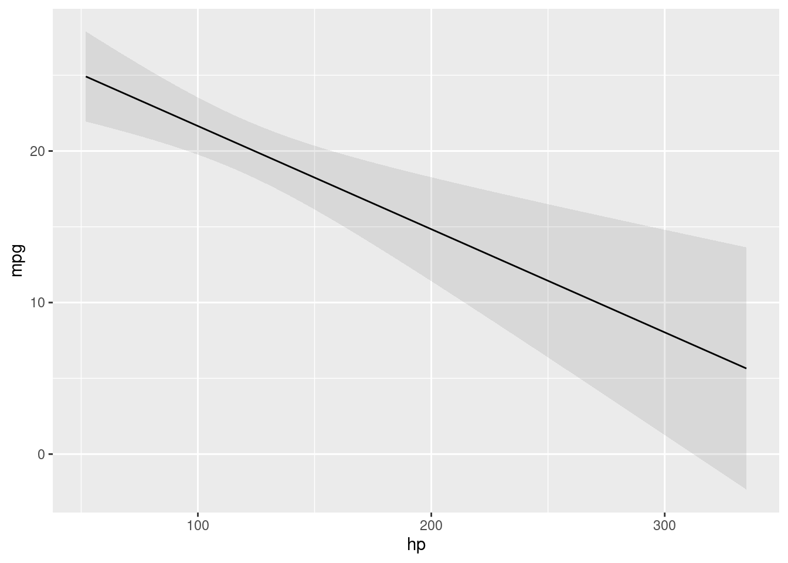

library(marginaleffects)
# Adjusted Prediction for every row of the original dataset
mod <- lm(mpg ~ hp + factor(cyl), data = mtcars)
pred <- predictions(mod)
head(pred)
Estimate Std. Error z Pr(>|z|) 2.5 % 97.5 %
20.0 1.204 16.6 <0.001 17.7 22.4
20.0 1.204 16.6 <0.001 17.7 22.4
26.4 0.962 27.5 <0.001 24.5 28.3
20.0 1.204 16.6 <0.001 17.7 22.4
15.9 0.992 16.0 <0.001 14.0 17.9
20.2 1.219 16.5 <0.001 17.8 22.5
Columns: rowid, estimate, std.error, statistic, p.value, conf.low, conf.high, mpg, hp, cyl # Adjusted Predictions at User-Specified Values of the Regressors
predictions(mod, newdata = datagrid(hp = c(100, 120), cyl = 4))
Estimate Std. Error z Pr(>|z|) 2.5 % 97.5 % hp cyl
26.2 0.986 26.6 <0.001 24.3 28.2 100 4
25.8 1.110 23.2 <0.001 23.6 27.9 120 4
Columns: rowid, estimate, std.error, statistic, p.value, conf.low, conf.high, mpg, hp, cyl m <- lm(mpg ~ hp + drat + factor(cyl) + factor(am), data = mtcars)
predictions(m, newdata = datagrid(FUN_factor = unique, FUN_numeric = median))
Estimate Std. Error z Pr(>|z|) 2.5 % 97.5 % hp drat cyl am
22.0 1.29 17.0 <0.001 19.4 24.5 123 3.7 6 1
18.2 1.27 14.3 <0.001 15.7 20.7 123 3.7 6 0
25.5 1.32 19.3 <0.001 23.0 28.1 123 3.7 4 1
21.8 1.54 14.1 <0.001 18.8 24.8 123 3.7 4 0
22.6 2.14 10.6 <0.001 18.4 26.8 123 3.7 8 1
18.9 1.73 10.9 <0.001 15.5 22.3 123 3.7 8 0
Columns: rowid, estimate, std.error, statistic, p.value, conf.low, conf.high, mpg, hp, drat, cyl, am
Attaching package: 'dplyr'The following objects are masked from 'package:stats':
filter, lagThe following objects are masked from 'package:base':
intersect, setdiff, setequal, unionmod <- lm(mpg ~ hp * am * vs, mtcars)
avg_predictions(mod)
Estimate Std. Error z Pr(>|z|) 2.5 % 97.5 %
20.1 0.484 41.5 <0.001 19.1 21
Columns: estimate, std.error, statistic, p.value, conf.low, conf.high predictions(mod, by = "am")
am Estimate Std. Error z Pr(>|z|) 2.5 % 97.5 %
1 24.4 0.760 32.1 <0.001 22.9 25.9
0 17.1 0.629 27.3 <0.001 15.9 18.4
Columns: am, estimate, std.error, statistic, p.value, conf.low, conf.high # Conditional Adjusted Predictions
plot_predictions(mod, condition = "hp")
# Counterfactual predictions with the `variables` argument
# the `mtcars` dataset has 32 rows
mod <- lm(mpg ~ hp + am, data = mtcars)
p <- predictions(mod)
head(p)
Estimate Std. Error z Pr(>|z|) 2.5 % 97.5 %
25.4 0.818 31.0 <0.001 23.8 27.0
25.4 0.818 31.0 <0.001 23.8 27.0
26.4 0.850 31.1 <0.001 24.7 28.1
20.1 0.775 25.9 <0.001 18.6 21.6
16.3 0.677 24.0 <0.001 15.0 17.6
20.4 0.796 25.6 <0.001 18.8 22.0
Columns: rowid, estimate, std.error, statistic, p.value, conf.low, conf.high, mpg, hp, am nrow(p)[1] 32# average counterfactual predictions
avg_predictions(mod, variables = "am")
am Estimate Std. Error z Pr(>|z|) 2.5 % 97.5 %
0 17.9 0.676 26.6 <0.001 16.6 19.3
1 23.2 0.822 28.3 <0.001 21.6 24.8
Columns: am, estimate, std.error, statistic, p.value, conf.low, conf.high # counterfactual predictions obtained by replicating the entire for different
# values of the predictors
p <- predictions(mod, variables = list(hp = c(90, 110)))
nrow(p)[1] 64# hypothesis test: is the prediction in the 1st row equal to the prediction in the 2nd row
mod <- lm(mpg ~ wt + drat, data = mtcars)
predictions(
mod,
newdata = datagrid(wt = 2:3),
hypothesis = "b1 = b2")
Term Estimate Std. Error z Pr(>|z|) 2.5 % 97.5 %
b1=b2 4.78 0.797 6 <0.001 3.22 6.35
Columns: term, estimate, std.error, statistic, p.value, conf.low, conf.high # same hypothesis test using row indices
predictions(
mod,
newdata = datagrid(wt = 2:3),
hypothesis = "b1 - b2 = 0")
Term Estimate Std. Error z Pr(>|z|) 2.5 % 97.5 %
b1-b2=0 4.78 0.797 6 <0.001 3.22 6.35
Columns: term, estimate, std.error, statistic, p.value, conf.low, conf.high # same hypothesis test using numeric vector of weights
predictions(
mod,
newdata = datagrid(wt = 2:3),
hypothesis = c(1, -1))
Term Estimate Std. Error z Pr(>|z|) 2.5 % 97.5 %
custom 4.78 0.797 6 <0.001 3.22 6.35
Columns: term, estimate, std.error, statistic, p.value, conf.low, conf.high # two custom contrasts using a matrix of weights
lc <- matrix(c(
1, -1,
2, 3),
ncol = 2)
predictions(
mod,
newdata = datagrid(wt = 2:3),
hypothesis = lc)
Term Estimate Std. Error z Pr(>|z|) 2.5 % 97.5 % drat wt
custom 4.78 0.797 6.0 <0.001 3.22 6.35 3.6 2
custom 115.21 3.647 31.6 <0.001 108.07 122.36 3.6 3
Columns: rowid, term, estimate, std.error, statistic, p.value, conf.low, conf.high, mpg, drat, wt # `by` argument
mod <- lm(mpg ~ hp * am * vs, data = mtcars)
predictions(mod, by = c("am", "vs"))
am vs Estimate Std. Error z Pr(>|z|) 2.5 % 97.5 %
1 0 19.7 1.119 17.7 <0.001 17.6 21.9
1 1 28.4 1.036 27.4 <0.001 26.3 30.4
0 1 20.7 1.036 20.0 <0.001 18.7 22.8
0 0 15.0 0.791 19.0 <0.001 13.5 16.6
Columns: am, vs, estimate, std.error, statistic, p.value, conf.low, conf.high library(nnet)
nom <- multinom(factor(gear) ~ mpg + am * vs, data = mtcars, trace = FALSE)
# first 5 raw predictions
predictions(nom, type = "probs") |> head()
Group Estimate Std. Error z Pr(>|z|) 2.5 % 97.5 %
3 3.62e-05 2.00e-03 0.0181 0.9856 -3.89e-03 3.96e-03
3 3.62e-05 2.00e-03 0.0181 0.9856 -3.89e-03 3.96e-03
3 9.35e-08 6.91e-06 0.0135 0.9892 -1.35e-05 1.36e-05
3 4.04e-01 1.97e-01 2.0569 0.0397 1.91e-02 7.90e-01
3 1.00e+00 1.25e-03 802.4451 <0.001 9.98e-01 1.00e+00
3 5.18e-01 2.90e-01 1.7884 0.0737 -4.97e-02 1.09e+00
Columns: rowid, group, estimate, std.error, statistic, p.value, conf.low, conf.high, gear, mpg, am, vs # average predictions
avg_predictions(nom, type = "probs", by = "group")
Group Estimate Std. Error z Pr(>|z|) 2.5 % 97.5 %
3 0.469 0.0404 11.60 <0.001 0.3895 0.548
4 0.375 0.0614 6.11 <0.001 0.2546 0.495
5 0.156 0.0462 3.38 <0.001 0.0656 0.247
Columns: group, estimate, std.error, statistic, p.value, conf.low, conf.high by <- data.frame(
group = c("3", "4", "5"),
by = c("3,4", "3,4", "5"))
predictions(nom, type = "probs", by = by)
Estimate Std. Error z Pr(>|z|) 2.5 % 97.5 % By
0.422 0.0231 18.25 <0.001 0.3766 0.467 3,4
0.156 0.0462 3.38 <0.001 0.0656 0.247 5
Columns: estimate, std.error, statistic, p.value, conf.low, conf.high, by # sum of predicted probabilities for combined response levels
mod <- multinom(factor(cyl) ~ mpg + am, data = mtcars, trace = FALSE)
by <- data.frame(
by = c("4,6", "4,6", "8"),
group = as.character(c(4, 6, 8)))
predictions(mod, newdata = "mean", byfun = sum, by = by)
Estimate Std. Error z Pr(>|z|) 2.5 % 97.5 % By
0.9158 0.121 7.547 <0.001 0.678 1.154 4,6
0.0842 0.121 0.693 0.488 -0.154 0.322 8
Columns: estimate, std.error, statistic, p.value, conf.low, conf.high, by